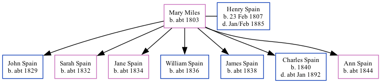

Mary Spain (née Miles) c1803 -
[ Home ] | [ Calendar ] | [ Surnames Index ] | [ Family History ]Mary Miles, the wife of Henry Spain (the three times great-uncle of Nigel Horne), was born in Monkton, Kent, England <i>c.</i> 1803<span class="citation">1,2,3,4</span> and married Henry (an agricultural laborer with whom she had 7 children: <a href="I1957.html">John</a>, <a href="I1982.html">Sarah</a>, <a href="I1983.html">Jane</a>, <a href="I1984.html">William</a>, <a href="I1985.html">James Robert</a>, <a href="I1986.html">Charles Henry</a> and <a href="I1987.html">Ann</a>) at St Mary Magdalene in Monkton on Feb 10, 1827<span class="citation">5</span> (From Barry White's data).</p><p>Throughout her life, she lived in St Nicholas-at-Wade, Kent, England on Mar 30, 1851<span class="citation">6</span>, in 1861<span class="citation">2</span> and on Apr 2, 1871<span class="citation">7</span>; and at The Street in St Nicholas-at-Wade on Apr 3, 1881<span class="citation">8</span>.
Children
- John was born c. 1829
- Sarah was born c. 1832
- Jane was born c. 1834
- William was born c. 1836
- James Robert was born c. 1838
- Charles Henry was born in 1840
- Ann was born c. 1844
Citations
- 1851 England Census Online publication - Provo, UT, USA: The Generations Network, Inc., 2005.Original data - Census Returns of England and Wales, 1851. Kew, Surrey, England: The National Archives of the UK (TNA): Public Record Office (PRO), 1851. Data imaged from the National
- 1861 England Census Online publication - Provo, UT, USA: The Generations Network, Inc., 2005.Original data - Census Returns of England and Wales, 1861. Kew, Surrey, England: The National Archives of the UK (TNA): Public Record Office (PRO), 1861. Data imaged from the National
- 1871 England Census Online publication - Provo, UT, USA: The Generations Network, Inc., 2004.Original data - Census Returns of England and Wales, 1871. Kew, Surrey, England: The National Archives of the UK (TNA): Public Record Office (PRO), 1871. Data imaged from the National
- 1881 England Census Online publication - Provo, UT, USA: The Generations Network, Inc., 2004. 1881 British Isles Census Index provided by The Church of Jesus Christ of Latter-day Saints © Copyright 1999 Intellectual Reserve, Inc. All rights reserved. All use is subject to the
- Kent, Canterbury Archdeaconry Marriages - Findmypast
- 1851 England, Wales & Scotland Census - Findmypast (was age 46 and the wife of the head of the household)
- 1871 England, Wales & Scotland Census - Findmypast (was age 67 and the wife of the head of the household)
- 1881 England, Wales & Scotland Census - Findmypast (was age 78 and the wife of the head of the household)
Media
1851 England, Wales & Scotland Census Transcription - GBC-1851-0005871660
1871 England, Wales & Scotland Census - GBC/1871/0014271841
1881 England, Wales & Scotland Census - GBC/1881/0004821302
Family Tree
Generated by Ged2Site. Last updated on Jul 20, 2025